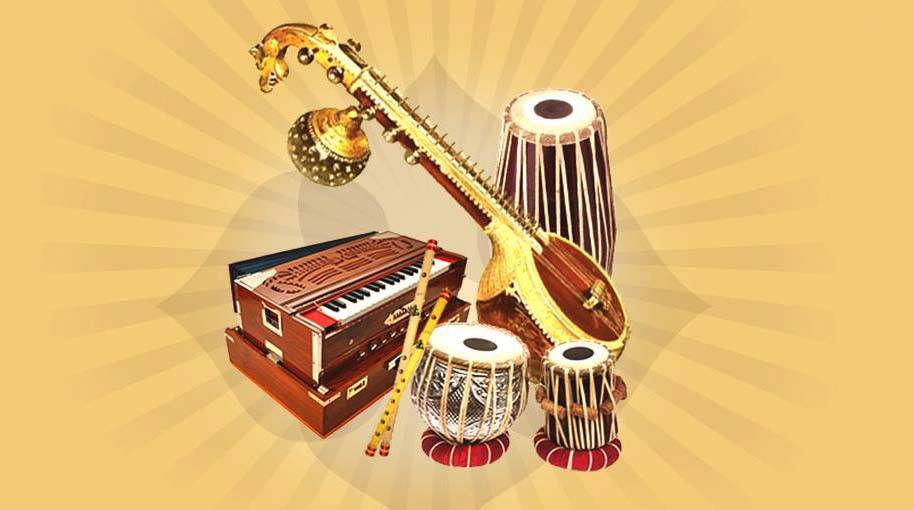

Introduction to Indian Classical Music
Indian Classical Music is the classical music of Indian origin. It goes back to the ancient history of India from where the classical music originated. It has two major traditions: the North Indian classical music tradition is called Hindustani, while the South Indian expression is called Carnatic. The two systems have more common features than differences. Indian classical music has two foundational elements, raga and tala. The raga, based on swara (notes including microtones), forms the fabric of a melodic structure, while the tala measures the time cycle. The raga gives an artist a palette to build the melody from sounds, while the tala provides them with a creative framework for rhythmic improvisation using time. In Indian classical the space between the notes is often more important than the notes themselves, and it does not have Western classical concepts such as harmony, counterpoint, chords, or modulation.
About Me
Hi There! Thank you for stopping by! I am Gavin Wagh and welcome to my blog! I am an Engineer, Violinist, cat lover and sometimes I write stuff. Hope you enjoy the articles!
What are Raagas ?

Raga is a melodic framework for improvisation akin to a melodic mode in Indian classical music. While the rāga is a remarkable and central feature of the classical music tradition, it has no direct translation to concepts in the classical European music tradition. Each raga is an array of melodic structures with musical motifs, considered in the Indian tradition to have the ability to "colour the mind" and affect the emotions of the audience. A raga consists of at least five notes, and each rāga provides the musician with a musical framework within which to improvise. The specific notes within a rāga can be reordered and improvised by the musician. Ragas range from small rāgas like Bahar and Shahana that are not much more than songs to big rāgas like Malkauns, Darbari and Yaman, which have great scope for improvisation and for which performances can last over an hour. Ragas may change over time, with an example being Marwa, the primary development of which has gone down to the lower octave compared to the traditionally middle octave. Each rāga traditionally has an emotional significance and symbolic associations such as with season, time and mood. The rāga is considered a means in Indian musical tradition to evoke certain feelings in an audience. Hundreds of rāga are recognized in the classical tradition, of which about 30 are common. Each raga, state Dorothea E. Hast and others,has its "own unique melodic personality" ... Each Raga is associated with a certain color, texture and time when its played. When a particular Raga is played at the given time it is said to completely exhibit the emotions which the Raga beholds. Some popular Indian film songs and ghazals use rāgas in their compositions.
Evolution of Indian Classical Music
Types
Indian Classical Music has the basics concept of 'Swar'. Swaras are the melodious frequencies on which any song/composition is formed. There are in total 12 Swaras. 7 of them are main swaras(notes). Different combinations of these notes form a 'Thaat'. There are 10 main thaats in Hindustani Classical Music. 7 main nots are - Sa (Shadja), Re(Rishabh), Ga(Gandhar), Ma(Madhyam), Pa(Pancham), Dha(Dhiavat), Ni(Nishad). 7 main notes are called 'shuddha swaras', 4 others are called 'komal swaras' and remaining one is tivra swar. In total they make 12 Swaras(7+4+1) Each Raga is a sub-part of Thaat. There can be multiple Raagas belonging to a same Thaat. Khyal, Thumri, Dhrupad, Tarana are the major forms Hindustani classical music type.
Instruments and Notation System
Instruments typically used in Hindustani music include the sitar, sarod, surbahar, esraj, veena, tanpura, bansuri, shehnai, sarangi, violin, santoor, pakhavaj and tabla. Instruments typically used in Carnatic music include veena, venu, gottuvadyam, harmonium, mridangam, kanjira, ghatam, nadaswaram and violin. Players of the tabla, a type of drum, usually keep the rhythm, an indicator of time in Hindustani music. Another common instrument is the stringed tanpura, which is played at a steady tone (a drone) throughout the performance of the raga, and which provides both a point of reference for the musician and a background against which the music stands out. Other instruments for accompaniment include the sarangi and the harmonium Indian classical music is both elaborate and expressive. Like Western classical music, it divides the octave into 12 semitones of which the 7 basic notes are, in ascending tonal order, Sa Re Ga Ma Pa Dha Ni. unlike modern Western classical music, Indian classical music places great emphasis on improvisation The underlying scale may have four, five, six or seven tones, called swaras
Why Classical Music is important ?
Our country has a rich heritage of arts and culture. And it is our duty to preserve, appreciate and pass on the same to the next generation. Indian Classical Music teaches us the most basic and fundamental concepts of Music. Because of its dedication, concepts, technicality and tenacious demand of Riyaz, classical music appears to be difficult for some. But only when we dive deep into the realms of music, we understand it. Sometimes Without that leap of faith, one is deprived of the beauty which classical music offers. And most above all, it has the power to make us feel emotins not with words but through music.